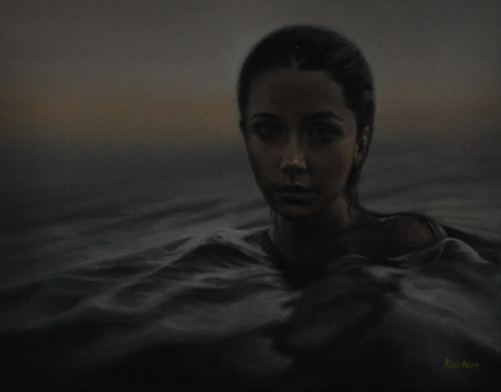
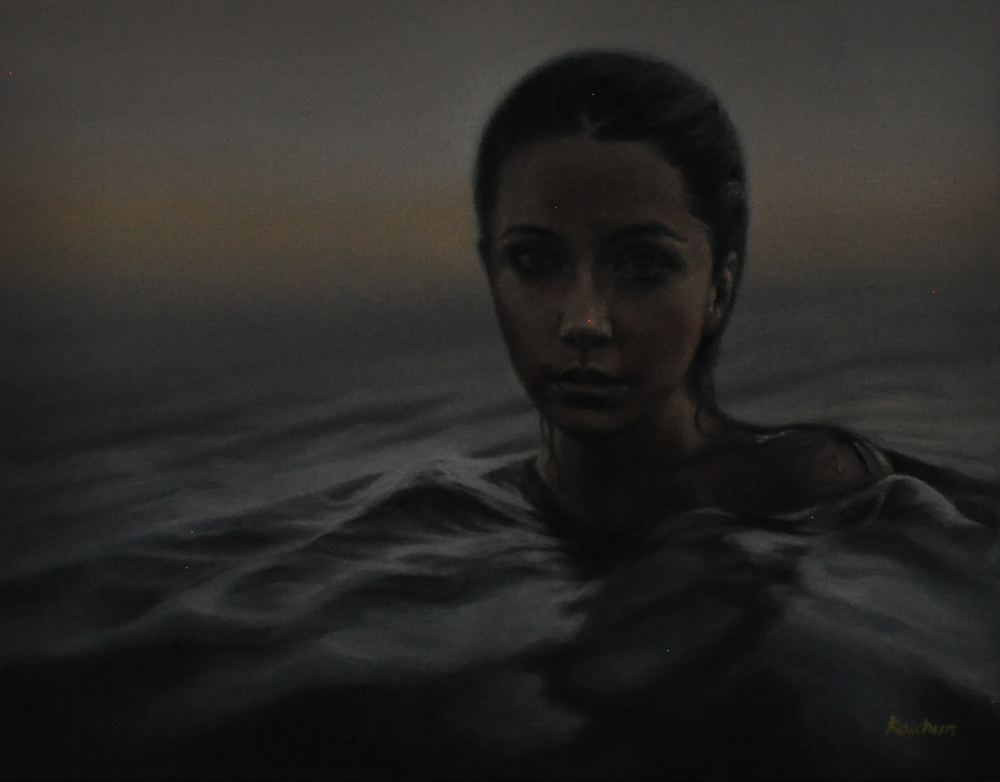
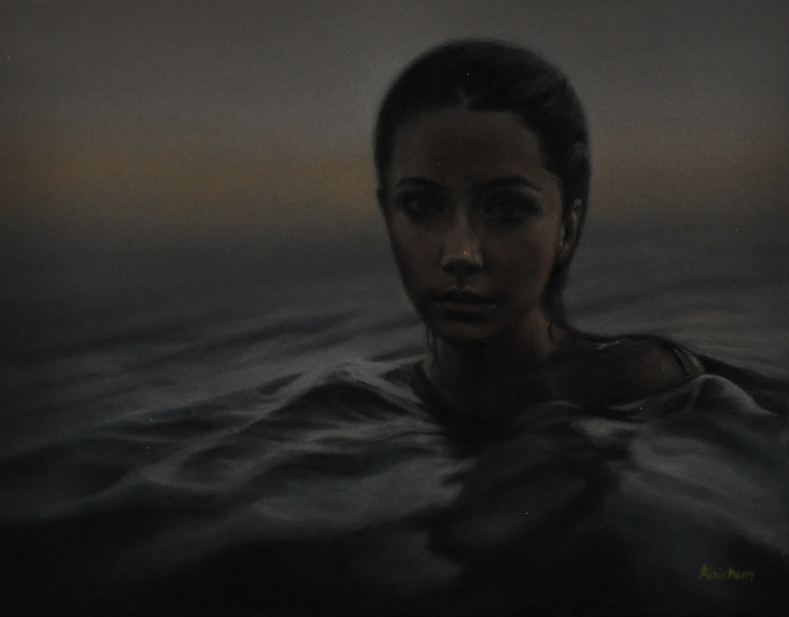
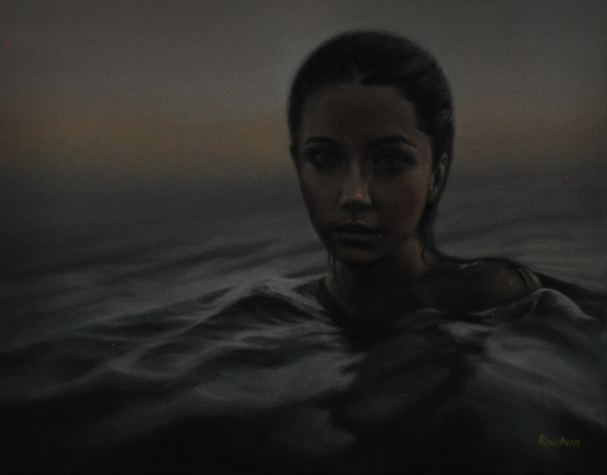
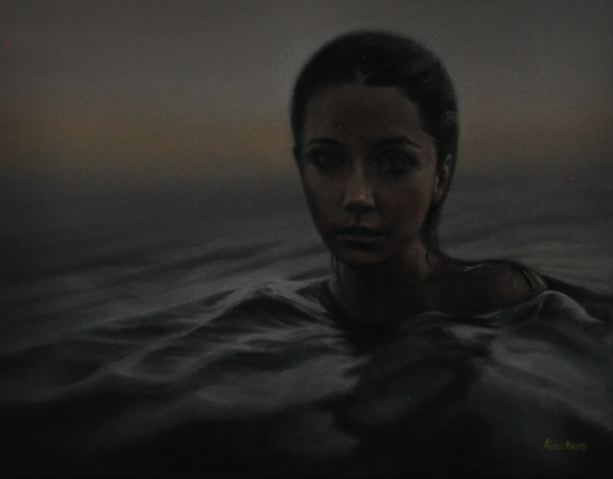

pedestrianlight
pedestrian lights run away with traffic lights
pedestrian lights work 24/7, alternating constantly and don't see each other, one day they run away with their traffic lights

pedestrianlight


 

 
